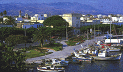
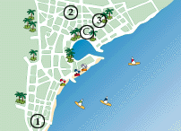
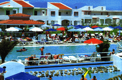

Tjæreborg Center og Hoteller på Kos

| 
|
TJÆREBORG CENTER: Kipriotis Village
Et stort hotellanlegg med internasjonal standard, beliggende i rolige omgivelser ca. 5 kilometer fra Kos by. Centret har mange fasiliteter så du og familien kan nyte ferien i fulle drag.
|
|
Kipriotis Village
På Tjæreborg Center Kipriotis Village er det noe å foreta seg for enhver. Her er det bl.a. sauna,
jacuzzi, trimrom og 2 ballbaner m.m.. Centret har også et stort bassengområde og ligger forøvrig like ved stranden. Barna har det morsomt i Tjæreborgs Teddy Club hvor det f.eks. er skattejakt, leker ved bassenget og morsomme konkurranser. De voksne har det heller ikke kjedelig. For morgen-
fuglene er det morgengymnastikk, og i løpet av dagen er det andre innslag som f.eks. vannpolo, boccia eller crazy golf. På slutten av ettermiddagen er det "happy hour" i baren hvor vi møtes for å spille bingo og er med på gjettekonkurranser. Etter en dag med mange aktiviteter er det underholdning og show for hele familien. På Kipriotis Village er det lekeplass, og et parkanlegg så stort at du kan gå en hyggelig spasertur i området. Utenfor hotellområdet ligger det noen lokale tavernaer, og vil du en tur ut til de varme kildene i Thermes, kan du leie sykkel på centret. Ønsker du å se mer av øya - enten på Tjæreborgs turer eller på egen hånd, kan du kontakte Tjæreborgs Servicekontor som har åpent det meste av uken. Her hjelper guidene med praktiske råd om reisemålet og gir tips om alle de mulighetene du har for å få en perfekt ferie.

KIPRIOTIS VILLAGE

|
| Strand | 100 m | Restaurant | Ja | Etasjer | 2
|
| Supermarked | Ja m | Bar | Ja | Heis | -
|
| Til buss | 10 m | TV-rom | Ja | Senger | 852
|
| Sentrum | 5 km | Salong | Ja | Tlf. i leil./rom | Ja
|
| Basseng | Ja | Resepsjon | Ja | TV i leil./rom | Ja
|
| Barnebass. | Ja | Deponering | Ja | Kjøleskap | Ja
|
| Solterrasse | Ja | Elektrisitet | 220 v | Byggeår | 1993/94
|
LEILIGHETER KATEGORI 4
Vårt leilighetsanlegg Kipriotis Village er et ferieparadis for hele familien. Anlegget er beliggende i et rolig strandområde med hotellbebyggelse og typiske greske tavernaer, samt 7 km fra Thermes, de varme kilder. Det er lokaltrafikk i området. Det går lokalbuss, samt en opplyst sykkelsti til sentrum. Kipriotis Village er bygget som en liten landsby over et stort grøntområde, med pene leiligheter fordelt i mange små bygninger. I hageanlegget er det flere svømmebasseng, hvorav et er med olympiske mål. Dette kan kun benyttes ved fellesaktiviteter eller av svømmegrupper, samt av alle gjester 1 time om morgenen og 1 time om ettermiddagen. Det er gratis solstoler og parasoller ved anlegget. I tillegg finnes det lekeplass for de yngste, tennisbaner, trimrom, sauna, jacuzzi (mot betaling), og frisør. Anlegget har også snackbar og suvenirforretning. Fra hagen fører en sti direkte til stranden med vannsportfasiliteter. Aktiviteter for barn og voksne om dagen, samt underholdning et par kvelder i uken. Alle leiligheter er stilfullt møblert i pene farger, og alle har kjøkkenkrok og hårtørrer. Det er luftkjølingsanlegg i leilighetene i de varmeste månedene, men ikke hele døgnet.
Adr. Psalidi, GR-85300 Kos.
Tlf.: 00 30 242/27 640.
Fax: 00 30 242/23 590.
Omkledning til middagen forventes. Rengjøring hver dag. Eventuell 5. seng i
2-roms leilighetene er ekstra oppredning i soveværelset.
HOTELLER PÅ KOS
AFRO
| Strand | 300 m | Restaurant | - | Etasjer | 3
|
| Supermarked | 50 m | Bar | Ja | Heis | -
|
| Til buss | 50 m | TV-rom | Ja | Senger | 34
|
| Sentrum | 300 m | Salong | Ja | Tlf. i leil./rom | -
|
| Basseng | - | Resepsjon | Ja | TV i leil./rom | -
|
| Barnebass. | - | Deponering | Ja | Kjøleskap | Ja
|
| Solterrasse | - | Elektrisitet | 220 v | Byggeår | 1984
|
LEILIGHETER KATEGORI 2
Et familiedrevet leilighetsanlegg med en sentral beliggenhet, og hovedgaten med forretninger og barer rett rundt hjørnet. Det er lokaltrafikk i området. Anlegget har bl.a. en kombinert salong og bar, samt snackbar. Alle leiligheter har kjøkkenkrok. Størrelsen på 2-roms leilighetene varierer en del.
Adr.: Navarinou 4, GR-85300 Kos.
Tlf.: 00 30 242/25 333.
Fax: 00 30 242/24 420.
Rengjøring 6 ganger i uken. Begrenset resepsjonsservice. Trafikkstøy.
YIORGOS
| Strand | 400 km | Restaurant | - | Etasjer | 4
|
| Supermarked | 100 m | Bar | Ja | Heis | Ja
|
| Til buss | 100 m | TV-rom | Ja | Senger | 63
|
| Sentrum | 1,1 km | Salong | Ja | Tlf. i leil./rom | Ja
|
| Basseng | - | Resepsjon | Ja | TV i leil./rom | -
|
| Barnebass. | - | Deponering | Ja | Kjøleskap | Ja
|
| Solterrasse | - | Elektrisitet | 220 v | Byggeår | 1981
|
HOTELL
KATEGORI 2+
Et lite og hyggelig familiedrevet hotell beliggende i et byområde med
hotell-bebyggelse og lokaltrafikk. Hotellet har frokostrestaurant og bar. Pene enkle rom med tekoker.
Adresse: Harmilou Street 9, GR-85300 Kos.
Tlf.: 00 30 242/23 297. Ingen fax.
Daglig rengjøring. Byggevirksomhet overfor hotellet. I høysesongen er det en del unge mennesker på hotellet.
KAPETAN YANNIS
| Strand | 1,3 km | Restaurant | - | Etasjer | 3
|
| Supermarked | 200 m | Bar | - | Heis | -
|
| Til buss | 500 m | TV-rom | Ja | Senger | 40
|
| Sentrum | 500 m | Salong | - | Tlf. i leil./rom | Ja
|
| Basseng | - | Resepsjon | Ja | TV i leil./rom | -
|
| Barnebass. | - | Deponering | Ja | Kjøleskap | Ja
|
| Solterrasse | - | Elektrisitet | 220 v | Byggeår | 1990
|
LEILIGHETER KATEGORI 2+
Hyggelig leilighetsanlegg, som ligger like ved en av hovedgatene i byområde med lokaltrafikk. Pent resepsjonsområde med TV, snackbar, samt en liten møblert terrasse. Leilighetene er store og alle har kjøkkenkrok.
Adr.: Kos by, GR-85300 Kos.
Tlf.: 00 30 242/21282.
Ved ankomst/avreise kan bussen ikke kjøre helt frem til anlegget, og man må derfor selv bære bagasjen ca. 100 m. Noe støy fra nærliggende lekeplass, samt trafikkstøy.
Rengjøring 6 ganger i uken.
![[Tjæreborg-Hjemmeside]](http:img/icon.gif)
![[SN Horisont]](http://www.sn.no/img/horisont.gif)